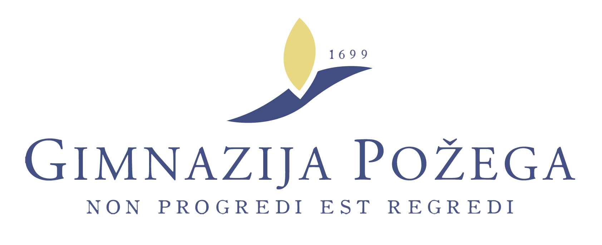

HELP US BY DONATING
Equipment and lab materialWithout continuous donations in instruments, reagents and lab glassware/plasticware, our work would not be possible. We are always looking to expand our inventory of equipment, since that will enable us to offer a diverse range of projects to our students. Even the smallest donations are highly appreciated!
Financial support
We need substantial financial support to cover basic costs of food and accommodation for our participants. Only half of those costs are covered from fees collected from the students. Financial support is also required to cover travel expenses of lecturers and projects leaders who are working as volunteers, as well as for students whose families are not able to pay the fee.
Join us!
Our School depends on many enthusiasts who donate their time and energy to the project. If you want to teach, have some extra time or ideas how to advance the project, don’t hesitate to contact us.
CONTACT
For financial support and donations of equipment, please contact Society for Out of Frame Education - EVO (E-mail: drustvo DOT evo AT gmail DOT com).
DONORS
We would like to thank the following institutions and companies for their generous support of our School via sponsorships to Society for Out-of-Frame Education (EVO):
MAIN SUPPORTER IN 2015:
OHTER SUPPORTERS IN 2015:
|  |
MAIN SUPPORTER IN 2014:
OTHER SUPPORTERS IN 2014:
Pozega Gymnasium
ETH Zurich
EMBL Heidelberg
PLIVA
Rudjer Boskovic Institute
Kutjevo d.d.
Krauthaker
APP Pozega
Neon Reklam
UDO Pozega
Tvornica reklama
Tiskara Vidic
MAIN SUPPORTER IN 2013:
OTHER SUPPORTERS IN 2013:
Pozega Gymnasium
MZOS
Google RISE award
SiS Catalyst EU FP7 project
Rudjer Boskovic Institute
Pruzne gradjevine d.o.o.
Koncar Institut
Spin Valis d. d.
Zeljeznicko projektno drustvo d. d.
MAIN SUPPORTER IN 2012:
Open Society Foundations Network
OTHER SUPPORTERS IN 2012:
SUPPORTER IN 2011:
FRIENDS OF SUMMER SCHOOL OF SCIENCE
The following groups and individuals made our projects possible by donating or borrowing crutial equipment and material. We would like to express our deepest gratitude to:
Ivica Aviani (Institute of Physics, Zagreb, Croatia)
Milica Arneric (NYU School of Medicine, USA)
Visnja Besendorfer (Faculty of Science, University of Zagreb, Croatia)
Ivana Biljan (Faculty of Science, University of Zagreb, Croatia)
Svjetlana Kalanj-Bognar (School of Medicine, University of Zagreb, Croatia)
Damir Bosnar (Faculty of Science, University of Zagreb, Croatia)
Majed Chergui (EPFL, Switzerland)
Ivan Dikic (Goethe Universitaet, Frankfurt, Germany)
Danijel Dojcinovic (ISREC, Lausanne, Switzerland)
Tonko Drazic (Rudjer Boskovic Institute, Zagreb, Croatia)
Ivana Ivancic Bace (Faculty of Science, University of Zagreb, Croatia)
Sylvia Jeney (EPFL, Switzerland)
Nenad Judas (Faculty of Science, University of Zagreb, Croatia)
Silva Katusic-Hecimovic (Rudjer Boskovic Institute, Zagreb, Croatia)
Marijeta Kralj (Rudjer Boskovic Institute, Croatia)
Anita Krisko (INSERM, Paris, France)
Zeljka Maglica (ETH Zurich, Switzerland)
Branka Medved Rogina (Rudjer Boskovic Institute, Zagreb, Croatia)
Marina Mokrovic (Faculty of Science, University of Zagreb, Croatia)
Dragana Mutavdzic-Pavlovic (Faculty of Chemical Engineering and Technology, University of Zagreb, Croatia)
Greta Pifat-Mrzljak (Rudjer Boskovic Institute, Zagreb, Croatia)
Dubravko Pavokovic (Faculty of Science, University of Zagreb, Croatia)
Tomislav Portada (Rudjer Boskovic Institute, Zagreb, Croatia)
Miroslav Pozek (Faculty of Science, University of Zagreb, Croatia)
Ines Primozic (Faculty of Science, University of Zagreb)
Victor Shnayder (Harvard University, USA)
Tvrtko Smital (Rudjer Boskovic Institute, Croatia)
Neven Smrecki (Faculty of Science, University of Zagreb, Croatia)
Ivan-Kresimir Svetec (MedILS, University of Zagreb, Croatia)
Tomislav Smuc (Rudjer Boskovic Institute, Zagreb, Croatia)
Francois Taddei (INSERM, Paris, France)
Mirta Tkalec (Faculty of Science, University of Zagreb, Croatia)
Iva Tolic-Norrelykke (Max Planck Institute, Dresden, Germany)
Palve Troselj (Rudjer Boskovic Institute, Croatia)
Hrvoj Vancik (Faculty of Science, University of Zagreb, Croatia)
Sinisa Volarevic (School of Medicine, University of Rijeka, Croatia)
Matt Welsh (Harvard University, USA)
Ivana Weygand-Durasevic (Faculty of Science, University of Zagreb, Croatia)
Ksenija Zahradka (Rudjer Boskovic Institute, Zagreb, Croatia)
Branka Zorc (Faculty of Pharmacy and Biochemistry, University of Zagreb, Croatia)
Zoran Zgaga (Faculty of Food Technology and Biotechnology, University of Zagreb, Croatia)
Laboratory for Stereoselective Catalysis and Biocatalysis (Rudjer Boskovic Institute, Zagreb, Croatia)
5th Gymnasium, Zagreb, Croatia
Copyright © 2014 Society for Out of Frame Education. All Rights Reserved.
Webdesign: Martina Mijuskovic. General text: Branimir Lukic and Martina Mijuskovic. Croatian translation: Matilda Males.